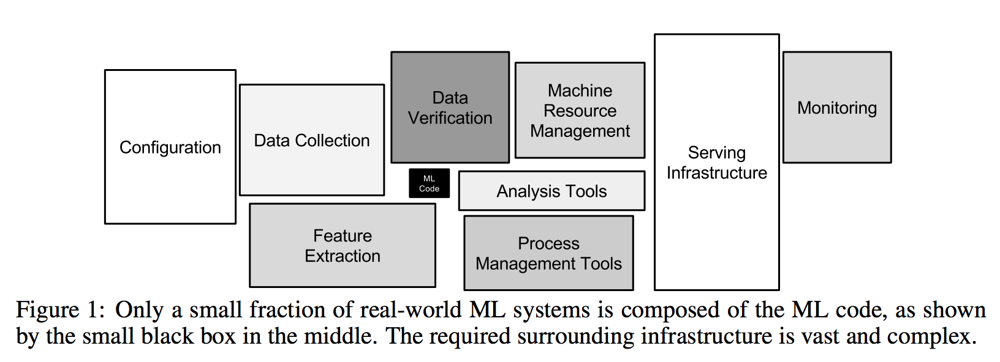

2019 Trends: Kubeflow and Machine Learning Infrastructure
This report is part of an ongoing series Patterson Consulting offers on our public blog as part of looking at current technology trends in the market. This post looks at some of the market trends we've seen in 2018 for Kubeflow.
Some overall 2018 infrastructure trends we note as of interest as we go into 2019:

- Mixtures of on-premise, cloud, and hybrid deployments are becoming more popular with enterprises.
- Our customers are either using Kubernetes or strongly considering it as their container orchestration platform (Patterson Consulting 2019 Trends report on Kubernetes)
- The 3 major cloud vendors ("big cloud") all are offering managed kubernetes and marketing Kubeflow as an option for running machine learning workflows
- Some of our customers are already adopting Kubeflow to manage on-premise infrastructure resources and multi-tenancy
Some highlights of this report include:
- Understanding trends in data science practice
- An overview of the Kubeflow project
- Understanding how Kubeflow is used and who uses it
- Selected media from large vendors investing in Kubeflow
- Kubeflow support from the major cloud vendors
Why is Kubeflow Compelling?
Planning and deploying machine learning infrastructure on-premise, in the cloud, and in hybrid situations is a key topic in the emerging machine learning landscape. Building machine learning models is only 20% of the overall process to deploying machine learning applications, as we can see below in the diagram from the paper "Hidden Technical Debt in Machine Learning Systems".
Customer Observations from Patterson Consulting Field Team
A few of the major challenges we see in the enterprise machine learning practitioner space are:
- data scientists tend to prefer their own unique cluster of libraries and tools
- these tools are generally heterogeneous both inside teams and across organizations
- data scientists needs to interoperate with the rest of the enterprise for resources, data, and model deployment
- many of their tools are python-based, where python scripts prove difficult to manage across a large organization
- many times data scientists want to build containers and then just "move them around" to take advantage of more powerful resources beyond their laptop, either in the on-premise data center or in the cloud
- containers are key part of how data scientists want to operate
- managing containers from local exectution, to on-premise infrastructure, to running on the cloud (easily and cleanly) is important
- teams need to balance multi-tenancy with access to storage and compute options (NAS, HDFS, Flashblade) and high-end GPUs (Nvidia DGX-1, etc)
- teams need a flexible way to customize their applied machine learning full applications, from ETL to modeling to model deployment, yet in a manner that stays within the above tenants
Integration with Other Data Infrastructure
In earlier years Spark has been a key technology for running machine learning jobs, but in more recent years we see enterprises shifting additionally towards GPU-based training in containers that may not live on a Hadoop cluster. Hadoop and Spark are still key tools for data storage and processing, but increasingly Kubernetes has come into the picture to manage the on-premise, cloud, and hybrid workloads. There is progressively a need to make these worlds work together on data lakes whether they were on-premise or in the cloud, or somewhere in-between. The Hadoop distributions are investing into integrating Kubernetes support, but its still a ways off. We see Kubeflow as having a role in bridging these worlds.
Kubeflow makes deploying these full applications easier. Kubeflow is an open source Kubernetes-native platform for developing, orchestrating, deploying, and running scalable and portable machine learning workloads based on Google’s internal machine learning pipelines.
What is Kubeflow?
Kubeflow is an open source Kubernetes-native platform for developing, orchestrating, deploying, and running scalable and portable machine learning workloads. It is a cloud native platform based on Google’s internal machine learning pipelines. The project is dedicated to making deployments of machine learning (ML) workflows on Kubernetes simple, portable and scalable.
Operating Kubeflow in an increasingly multi-cloud and hybrid cloud world will be a key topic as the market grows and as Kubernetes adoption grows. A single workflow may have a lifecycle that starts on-premise but quickly requires resources only available in the cloud. How Kubeflow meets the organizational needs for machine learning infrastructure as described above is described in the quote from the Kubeflow blog below:
“The leading research and development organizations are quickly migrating to open source machine learning frameworks, especially those that take advantage of the operational and infrastructure efficiencies provided by containers, micro-services and Kubernetes. This trend is demonstrated in a recent 451 Research survey which found that over 70% of enterprise organizations surveyed are using Kubernetes. GitHub has over 95M projects, and Kubernetes and Tensorflow are frequently in the top 10 projects, in terms of contributors, discussions, forks, and reviews. With an ever-increasing availability of data and compute power, machine learning is turning out to be a powerful tool to solve various problems and helping achieve state of the art results. In such interesting times, Kubeflow has grown very quickly to be one of the most promising ML toolkits in the cloud native open source world.”
Kubeflow Blog: "Why Kubeflow in Your Infrastructure"
Another compelling factor for Kubeflow that makes it distinctive as an open source project is the google backing of the project. TensorFlow is an example of how open source projects offered by Google tend to enjoy disproportionate brand awareness as compared to other similar open source projects. We’re also seeing this effect with the Kubernetes project in container orchestration.
How is Kubeflow Used?
Kubeflow is used typically for the following reasons:
- You want to train/serve machine learning models in different environments (e.g. local, on-premise, and cloud)
- You want to use Jupyter notebooks to manage machine learning training jobs
- You want to launch training jobs that use resources (such as additional CPUs or GPUs – that aren’t available on your personal computer)
- You want to combine machine learning code (e.g., TensorFlow code with other processes (For example, you may want to use TensorFlow/agents to run simulations to generate data for training reinforcement learning models.)
Who is Most Interested in Kubeflow?
Some of the key enterprise personnel that have the most interest in Kubernetes include:
- DevOps Engineer
- Platform Architect
- Data scientists
- Data Engineer
Selected Media on Kubeflow in 2018
We are beginning to see press on Kubeflow in the second half of 2018 going into 2019. We highlight some key articles in the section below.
Cisco Makes a Big Bet on Kubeflow
Cisco is making Kubeflow directly a key management part of their new UCS C480 ML Offering:
Cisco leverages Kubernetes to manage the compute and storage resources inside the latest C480 ML Offering, going as far as to become a contributor to the Kubeflow project to help make it ready for their hardware. They are targetting the hybrid cloud experience for the new UCS offering, stating "Companies running Kubeflow on the new UCS server will be able to use the same machine learning tools on-premises and on Google Cloud".“More C480/Cisco AI ecosystem work involves Cisco contributing code to the Google Kubeflow open-source project, which integrates TensorFlow with Kubernetes, announcing its DevNet AI Developer Center for developers, operators, and data scientists, a DevNet Ecosystem Exchange, and working with Anaconda so data scientists and developers can collaborate on machine learning using languages such as Python.“
TheRegister.co.uk: Cisco C480ML Announcement Coverage
Google chimes in on the project from their own blog:
Beyond just Kubeflow, Cisco has made efforts to integrate the new UCS offering with other data infrastructure. A separate article also states that Cisco is making further efforts to integrate big data tool offerings from MapR, Cloudera, and Horton such that the "UCS server is part of the big data cluster" and that “It’s able to support much more variety of software, and the particular software stack can oftentimes be curate by the data scientist themselves for particular needs”.“Cisco and Google Cloud have been working on an open hybrid cloud architecture to help customers maximize their investments across cloud and on-premises environments. Continuing this commitment, Cisco announced that the Unified Computing System (UCS) and HyperFlex platforms will leverage Kubeflow to provide production-grade on-premise infrastructure to run AI/ML jobs.“
Google Blog: "Simplifying Machine Learning on Open Hybrid Clouds with Kubeflow"
We also see the Hadoop vendors paying close attention to not only Kubernetes but also Kubeflow:
“What KubeFlow does is make all of this functionality a bit more user-friendly by providing some of the commonly used machine learning projects as pre-built templatized offerings (ksonnets) that are pretested to integrate together in one Kubernetes namespace ...“
MapR.com: "Kubernetized Machine Learning and AI Using KubeFlow"
Nvidia Invests in Kubeflow for Managing GPUs
Nvidia's GPUs are managed with Kubeflow and Kubernetes for both the Cisco C480ML mentioned above. Nvidia themselves have made some investments in the Kubeflow pipeline space as described in the quote below.
“To help accelerate end-to-end data science training, NVIDIA developed RAPIDS, an open-source data analytics and machine learning acceleration platform designed exclusively for GPUs. As a step towards wider integration, the Kubeflow team announced the availability of the NVIDIA RAPIDS GPU-accelerated libraries as an image on the Kubeflow Pipelines.“
nvidia.com: "NVIDIA RAPIDS Accelerates Kubeflow Pipeline with GPUs on Kubernetes"
Nvidia drives the GPU space, which drives the applied machine learning space. They hold a lot of sway with the high end GPU crowd and have made some in-roads into the enterprise space with the DGX appliance. Nvidia has been recently evangelizing Kubeflow to manage resources in multi-tenant situations.
Redhat Invests in the Kubeflow Project
Redhat also directly mentions their investment in Kubeflow:
“Today we are taking another step forward and working with the community on the Kubeflow project. Our intent is to make Kubeflow a vendor-neutral, open community with the mission to make machine learning on Kubernetes easier, portable and more scalable. “We’re ecstatic that Red Hat has joined the Kubeflow community and is bringing their knowledge of large-scale deployments to the project,” said David Aronchick, Product Manager on Kubeflow. “With OpenShift’s native Kubernetes implementation and success in major companies around the world, Kubeflow gives you the opportunity bring ML and OpenShift together on a single platform.”“
openshift.com: "Machine Learning on OpenShift and Kubernetes"
Traditional Large Technology Companies See Value in Kubeflow
Intel's AI blog provides a tutorial on using Kubeflow:
"Kubernetes* is a cloud platform and a container orchestration tool which is changing the industry standard on how to deploy and manage applications at scale. Another project—Kubeflow—has recently emerged to utilize what Kubernetes offers, and makes it easy to deploy distributed machine learning workloads with just a few commands."
Intel Blog Tutorial: "Let’s Flow within Kubeflow"
Oracle has also published tutorials on how to use Kubeflow with their container service:
"With OCI Container Engine for Kubernetes and Kubeflow, you can easily setup a flexible and scalable machine learning and AI platform for your projects. You can focus more on building and training your models rather than on managing the underlying infrastructure. "
Oracle's Blog: "Deploy Kubeflow with Oracle Cloud Infrastructure Container Engine for Kubernetes"
Big Cloud Supporting Kubeflow
All three major cloud vendors have promoted running Kubeflow on their managed kubernetes platforms. Given that:
- cloud dominates today’s infrastructure discussion
- all three major cloud vendors are pushing kubernetes as the way to do cloud / hybrid workloads with container orchestration, and offering managed kubernetes options
- all three are pushing kubeflow on kubernetes as a key way to run machine learning workflows and inference serving
Summary
In 2018 we saw data scientists continue to experiment with multiple machine learning tools (sci-kit learn, tensor flow, pytorch, dl4j, etc), yet have not converged on a singular stack yet. In this article we presented market trends (customer interactions, vendor investments, and conference trends) that indicate that Kubeflow has a growing role in the machine learning infrastructure market going into 2019.